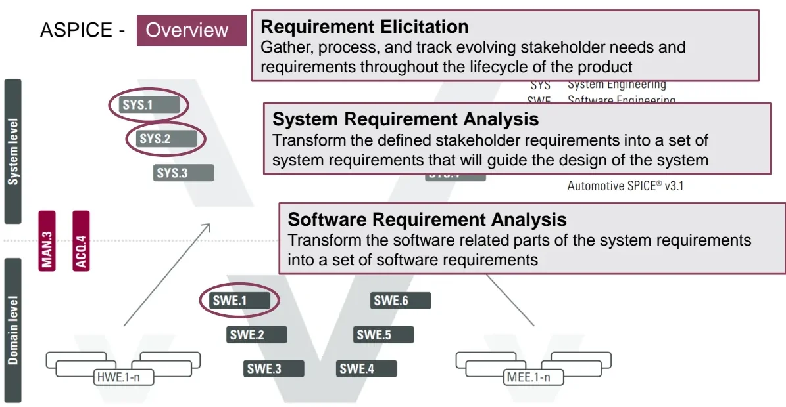
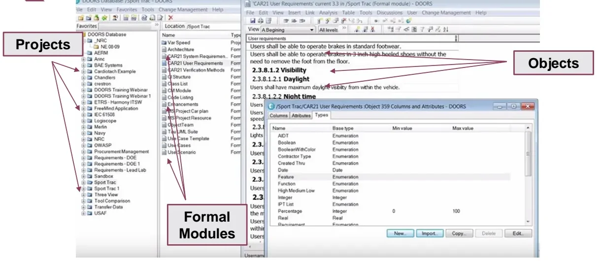

Requirements Management¶
Every automotive project starts with requirements. Before any code is written or a HIL (Hardware-in-the-Loop) rig is powered up, the project must define what exactly the system must do, and how that will be proven. In the automotive industry, requirements are not an informal to-do list: they are contract-relevant engineering artifacts that are elicited, reviewed, versioned and traced through the entire development lifecycle.
As an E/E engineer you may never own the requirements document, but you will read it regularly, derive test cases from it, and justify test results against it. This article covers:
- explain how Automotive SPICE (ASPICE) structures the requirements chain and why OEMs (Original Equipment Manufacturers) audit suppliers against it,
- identify a poorly written requirement and rewrite it into a well-formed one,
- navigate IBM Rational DOORS, the industry-standard tool where real projects store and trace thousands of requirements.
Automotive SPICE¶
Automotive SPICE — short for Software Process Improvement and Capability dEtermination — is the automotive-specific variant of the international standard ISO/IEC 15504 (SPICE). Its job is to improve and evaluate the development processes of ECU (Electronic Control Unit) suppliers: when a carmaker audits a supplier, the ASPICE model defines which processes are examined and how their maturity is rated.
ASPICE lays its processes onto the V-model you already know from the V-Cycle. Three of them sit at the very top of the left leg and form the requirements chain:

| Process | Name | What it does |
|---|---|---|
| SYS.1 | Requirements Elicitation | Gather, process and track evolving stakeholder needs and requirements throughout the product lifecycle |
| SYS.2 | System Requirements Analysis | Transform the defined stakeholder requirements into a set of system requirements that will guide the design of the system |
| SWE.1 | Software Requirements Analysis | Transform the software-related parts of the system requirements into a set of software requirements |
The key idea is progressive refinement with traceability: each level transforms the level above it, and every derived requirement must be linkable back to its parent — and forward to the test that will prove it.
flowchart TD
A["Stakeholder needs<br/>(SYS.1 elicitation)"] --> B["System requirements<br/>(SYS.2 analysis)"]
B --> C["Software requirements<br/>(SWE.1 analysis)"]
C --> D["Software architecture & unit design<br/>(SWE.2 / SWE.3)"]
A -. "traced to" .-> B
B -. "traced to" .-> C
C -. "verified by" .-> E["Tests<br/>(SWE.4–SWE.6, SYS.4–SYS.5)"]Relevance for test engineers
ASPICE traceability is bidirectional: a requirement must trace down to design and code, and every requirement must be verifiable by a test or analysis on the right leg of the V. When you later write test cases in the Test Cases lesson and run them in Verification, each test will reference the requirement IDs it covers. Traceability ensures that no requirement is left untested and no test exists without a requirement.
Functional vs. non-functional requirements¶
Requirements fall into two fundamental categories:
- Functional requirements — what the system shall do. Example: "If the driver presses the brake pedal, the brake lights shall illuminate."
- Non-functional requirements — what the system shall be: qualities and constraints such as timing, memory consumption, temperature range, reliability, maintainability or compliance with a standard. Example: "The function shall execute within 10 ms" or "The ECU shall operate from −40 °C to +85 °C."
Both kinds must follow the same quality rules below. A vague non-functional requirement ("the system shall be fast") is just as defective as a vague functional one — and just as likely to cause failures during testing.
Anatomy of a good requirement¶
A requirement is only useful if it can be understood one way, built within real constraints, and proven at the end. Six characteristics define a well-formed requirement:
| Characteristic | Rule |
|---|---|
| Clear and unambiguous | Only one way to interpret it |
| Testable (verifiable) | Can be checked by inspection, analysis, demonstration or test |
| Feasible | Doable within existing constraints (cost, timing, technology) |
| Consistent | No conflicts with other requirements; avoid redundancy |
| Atomic | A single statement — no conjunctions bundling several requirements |
| Traceable | Its level and its correlation with other requirements are known |
The following bad → good rewrites illustrate each rule.
Clear and unambiguous¶
❌ The system shall not accept password longer than 15 characters.
"Not accept" admits several interpretations — ignore the input, truncate it, or reject it with an error — and different developers will choose different ones. The fixed version states the observable behavior:
✅ If the user inserts a password longer than 15 characters, then the system shall display an error message and shall ask the user to correct it.
Testable¶
❌ The system must refresh the data reasonably quickly.
"Reasonably quickly" is not verifiable. A requirement is testable only if it contains a measurable criterion:
✅ The system must refresh the data each 0.5 ms.
There are four recognized verification methods: inspection (review the artifact), analysis (calculate or simulate), demonstration (operate and observe) and test (stimulate with defined inputs and compare outputs). Pick the method per requirement — and write the requirement so that at least one method applies.
Feasible¶
❌ The replacement control system shall be installed with no disruption of the production.
Zero disruption is usually physically impossible, so this requirement cannot be satisfied. A feasible version quantifies what the business can actually accept:
✅ The replacement control system shall be installed causing no more than 2 days of production disruption.
Consistent¶
Requirements must not contradict each other. In this pair, REQ2 silently forbids exactly what REQ1 demands:
❌ REQ1: If A != B, then initialization shall be triggered. ❌ REQ2: The request for initialization shall be sent permanently with the value 0 ('kein_init').
The conflict is resolved by keeping the single, agreed behavior:
✅ The request for initialization shall be sent permanently with the value 0 ('kein_init').
Redundancy is also a consistency problem
If the same behavior is stated in two places, a later change to one copy creates a hidden contradiction between the two. State each behavior once and reference it wherever it applies.
Atomic¶
A requirement that bundles several conditions with conjunctions is not atomic. One requirement, one statement:
❌ In case of overtemperature, overcurrent and overvoltage the system shall abort the charge.
Split it so each condition can be traced, implemented and tested individually:
✅ REQ1: In case of overtemperature the system shall abort the charge. ✅ REQ2: In case of overcurrent the system shall abort the charge. ✅ REQ3: In case of overvoltage the system shall abort the charge.
Now each fault case gets its own test, its own link, and its own verdict in the verification report.
Traceable¶
It must always be possible to know which level a requirement belongs to (stakeholder, system, software) and how it correlates with other requirements — which parent it refines, which siblings it depends on, and which tests verify it. Traceability is not a property of the sentence but of the requirement management: it is maintained in the requirements tool, described in the next section.
Managing requirements in IBM Rational DOORS¶
IBM Rational DOORS (Dynamic Object-Oriented Requirements System) is the de-facto standard requirements management tool in the automotive industry. Maintaining thousands of linked, versioned requirements is not practical in a Word document or Excel sheet; DOORS is designed for this. The following sections describe its data model and core features.
The data hierarchy¶
DOORS organizes a database into three levels you will see immediately in its two main windows:

| Level | What it is |
|---|---|
| Project / folder | A container in the database explorer, grouping related work (e.g. one vehicle project) |
| Formal module | A structured document inside a project — e.g. "User Requirements", "System Requirements", "Verification Methods" |
| Object | One row inside a formal module: a requirement, a heading, or explanatory text |
Each object carries an absolute number, a heading hierarchy (the numbered outline you see in the module), and a set of attributes.
Attributes¶
Attributes characterize every requirement object, support the process, and allow efficient administration of large requirement sets. Typical attributes include the object ID, status, priority, verification method, and any customized attributes your project defines (e.g. "ASIL", "Variant", "Source"). DOORS distinguishes:
- predefined attributes — built-in system data (creation date, author, absolute number, …),
- customized attributes — project-specific columns with defined types (enumeration, integer, date, text, …).
Attributes are also scriptable: DOORS ships with its own extension language, DXL (DOORS eXtension Language), used for automation such as loading a standard view onto the current module:
Module m = current
Object o = current
Filter f
load view "Standard view"
Filtering¶
To work inside a module of 5 000 requirements you need filters. DOORS can filter objects by:
- names and IDs,
- links through modules (e.g. show only objects linked to a given test module),
- wildcards and full regular expressions,
- predefined and customized attribute values,
and multiple conditions can be combined in one filter.
Filters are not persisted
A DOORS filter is not saved as part of the module by default — closing the module discards a multi-condition filter. Save working configurations as named views so they persist and can be used for exports.
Baselines, links and history¶
These are the features that make DOORS a management tool rather than a text editor:
- Links for traceability — objects in one module link to objects in another (system requirement → software requirement → test case). DOORS visualizes and analyzes link coverage, and can report orphan requirements or tests that verify nothing.
- Baselines — immutable snapshots of a module at a defined point (e.g. "System Requirements v3.3" released to the supplier). You can always diff the current state against any baseline.
- Defined views for exports — saved column/filter/sort configurations, used to generate consistent documents for reviews and customers.
- Easy import/update of attributes — bulk changes (e.g. setting a new status on hundreds of objects) via import instead of manual editing.
- History — every change to every object is recorded with author and timestamp, so audits can reconstruct who changed what and when.
flowchart LR
subgraph DOORS database
M1["Module:<br/>Stakeholder reqs"] -->|"link"| M2["Module:<br/>System reqs"]
M2 -->|"link"| M3["Module:<br/>Software reqs"]
M3 -->|"link"| M4["Module:<br/>Test cases"]
end
M2 -.->|"baseline v3.3"| B["Frozen release<br/>snapshot"]Practical habit
Before editing anything in a shared project, check whether the module is baselined and whether a change-management process applies — in many OEM projects you may only edit in a working copy, and changes are reviewed before they reach the released baseline.
From requirements to the rest of the bootcamp¶
Requirements management is the entry point of the whole MIL3/MIL4 chain: the test cases you will design in Test Cases derive their expected behavior directly from requirement text, and the Verification and Validation lessons close the loop by proving each requirement on the bench or in the vehicle. A requirement that is ambiguous, untestable or untraceable will surface again as an argument about test results — which is why the six quality rules above matter to you even if you never write a requirement yourself.
Key takeaways
- Automotive SPICE (ISO/IEC 15504 for automotive) evaluates ECU supplier processes; the requirements chain is SYS.1 elicitation → SYS.2 system analysis → SWE.1 software analysis, each level refining the previous one.
- Functional requirements say what the system does; non-functional requirements say what it is (timing, temperature, memory, …).
- Well-formed requirements are judged against six characteristics: clear, testable, feasible, consistent, atomic, traceable; any requirement that must be verified needs a measurable criterion.
- Verification methods: inspection, analysis, demonstration, test.
- DOORS structures requirements as database → projects → formal modules → objects, with attributes, filters, baselines, history and cross-module links providing traceability end to end.
Where this leads
The next lessons derive executable checks from requirements in Test Cases and verify them on real hardware in Verification and Validation.
Source material¶
This article was distilled from the academy lesson materials:
- Requirements management — PDF, 1.0 MB